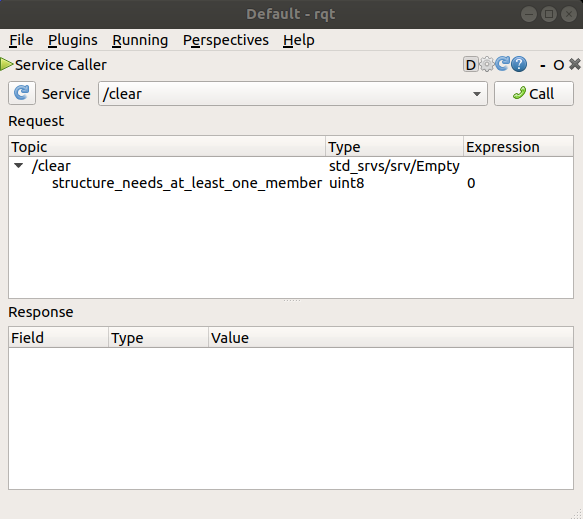
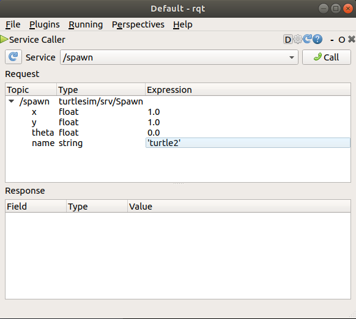
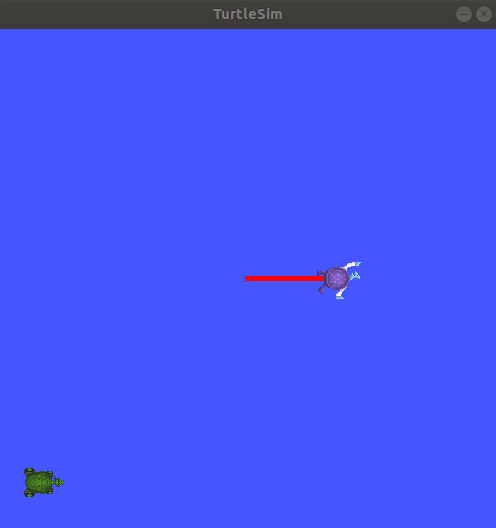
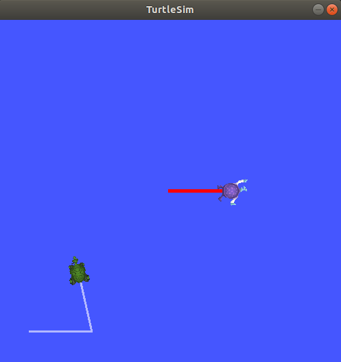

Introducing turtlesim and rqt¶
Goal: Install and use the turtlesim package and rqt tools to prepare for upcoming tutorials.
Tutorial level: Beginner
Time: 15 minutes
Contents
Background¶
Turtlesim is a lightweight simulator for learning ROS 2. It illustrates what ROS 2 does at the most basic level, to give you an idea of what you will do with a real robot or robot simulation later on.
rqt is a GUI tool for ROS 2. Everything done in rqt can be done on the command line, but it provides an easier, more user-friendly way to manipulate ROS 2 elements.
This tutorial touches on core ROS 2 concepts, like the separation of nodes, topics, and services. All of these concepts will be elaborated on in later tutorials; for now, you will simply set up the tools and get a feel for them.
Prerequisites¶
The previous tutorial, Configuring your ROS 2 environment, will show you how to set up your environment.
Turtlesim and rqt are only available in ROS 2 from Dashing onward.
Tasks¶
1 Install turtlesim¶
As always, start by sourcing your setup files in a new terminal, as described in the previous tutorial.
Install the turtlesim package for your ROS 2 distro:
sudo apt update
sudo apt install ros-<distro>-turtlesim
As long as the archive you installed ROS 2 from contains the ros_tutorials repository, you should already have turtlesim installed.
As long as the archive you installed ROS 2 from contains the ros_tutorials repository, you should already have turtlesim installed.
Check that the package installed:
ros2 pkg executables turtlesim
The above command should return a list of turtlesim’s executables:
turtlesim draw_square
turtlesim mimic
turtlesim turtle_teleop_key
turtlesim turtlesim_node
2 Start turtlesim¶
To start turtlesim, enter the following command in your terminal:
ros2 run turtlesim turtlesim_node
The simulator window should appear, with a random turtle in the center.

In the terminal under the command, you will see messages from the node:
[INFO] [turtlesim]: Starting turtlesim with node name /turtlesim
[INFO] [turtlesim]: Spawning turtle [turtle1] at x=[5.544445], y=[5.544445], theta=[0.000000]
Here you can see your default turtle’s name is turtle1, and the default coordinates where it spawns.
3 Use turtlesim¶
Open a new terminal and source ROS 2 again.
Now you will run a new node to control the turtle in the first node:
ros2 run turtlesim turtle_teleop_key
At this point you should have three windows open: a terminal running turtlesim_node, a terminal running turtle_teleop_key and the turtlesim window.
Arrange these windows so that you can see the turtlesim window, but also have the terminal running turtle_teleop_key active so that you can control the turtle in turtlesim.
Use the arrow keys on your keyboard to control the turtle. It will move around the screen, using its attached “pen” to draw the path it followed so far.
Note
Pressing an arrow key will only cause the turtle to move a short distance and then stop. This is because, realistically, you wouldn’t want a robot to continue carrying on an instruction if, for example, the operator lost the connection to the robot.
You can see the nodes and their associated services, topics, and actions using the list command:
ros2 node list
ros2 topic list
ros2 service list
ros2 action list
You will learn more about these concepts in the coming tutorials. Since the goal of this tutorial is only to get a general overview of turtlesim, we will use rqt (a graphical user interface for ROS 2) to look at services a little closer.
4 Install rqt¶
Open a new terminal to install rqt and its plugins:
sudo apt update
sudo apt install ~nros-<distro>-rqt*
sudo apt update
sudo apt install ros-<distro>-rqt*
The standard archive for installing ROS 2 on macOS contains rqt and its plugins, so you should already have rqt installed.
The standard archive for installing ROS 2 on Windows contains rqt and its plugins, so you should already have rqt installed.
To run rqt:
rqt
5 Use rqt¶
After running rqt the first time, the window will be blank. No worries; just select Plugins > Services > Service Caller from the menu bar at the top.
Note
It may take some time for rqt to locate all the plugins itself.
If you click on Plugins, but don’t see Services or any other options, you should close rqt, enter the command rqt --force-discover in your terminal.

Use the refresh button to the left of the Service dropdown list to ensure all the services of your turtlesim node are available.
Click on the Service dropdown list to see turtlesim’s services, and select the /spawn service.
5.1 Try the spawn service¶
Let’s use rqt to call the /spawn service.
You can guess from its name that /spawn will create another turtle in the turtlesim window.
Give the new turtle a unique name, like turtle2 by double-clicking between the empty single quotes in the Expression column.
You can see that this expression corresponds to the name value, and is of type string.
Enter new coordinates for the turtle to spawn at, like x = 1.0 and y = 1.0.

Note
If you try to spawn a new turtle with the same name as an existing turtle, like your default turtle1, you will get an error message in the terminal running turtlesim_node:
[ERROR] [turtlesim]: A turtle named [turtle1] already exists
To spawn turtle2, you have to call the service by clicking the Call button on the upper right side of the rqt window.
You will see a new turtle (again with a random design) spawn at the coordinates you input for x and y.
If you refresh the service list in rqt, you will also see that now there are services related to the new turtle, /turtle2/…, in addition to /turtle1/….
5.2 Try the set_pen service¶
Now let’s give turtle1 a unique pen using the /set_pen service:

The values for r, g and b, between 0 and 255, will set the color of the pen turtle1 draws with, and width sets the thickness of the line.
To have turtle1 draw with a distinct red line, change the value of r to 255, and the value of width to 5. Don’t forget to call the service after updating the values.
If you return to the terminal where turtle_teleop_node is running and press the arrow keys, you will see turtle1’s pen has changed.

You’ve probably noticed that there’s no way to move turtle2.
You can accomplish this by remapping turtle1’s cmd_vel topic onto turtle2.
6 Remapping¶
In a new terminal, source ROS 2, and run:
ros2 run turtlesim turtle_teleop_key --ros-args --remap turtle1/cmd_vel:=turtle2/cmd_vel
ros2 run turtlesim turtle_teleop_key turtle1/cmd_vel:=turtle2/cmd_vel
Now you can move turtle2 when this terminal is active, and turtle1 when the other terminal running the turtle_teleop_key is active.

7 Close turtlesim¶
To stop the simulation, you can simply close the terminal windows where you ran turtlesim_node and turtle_teleop_key.
If you want to keep those terminals open, but end the simulation, you can enter Ctrl + C in the turtlesim_node terminal, and q in the teleop terminal.
Next steps¶
Now that you have turtlesim and rqt up and running, and an idea of how they work, let’s dive in to the first core ROS 2 concept with the next tutorial, Understanding ROS 2 nodes.